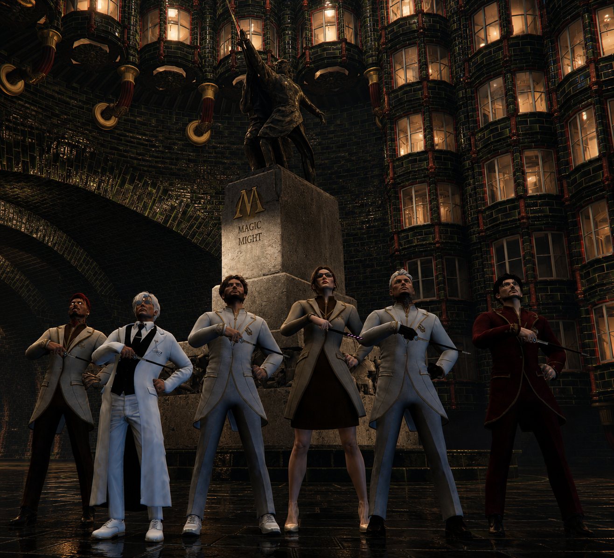
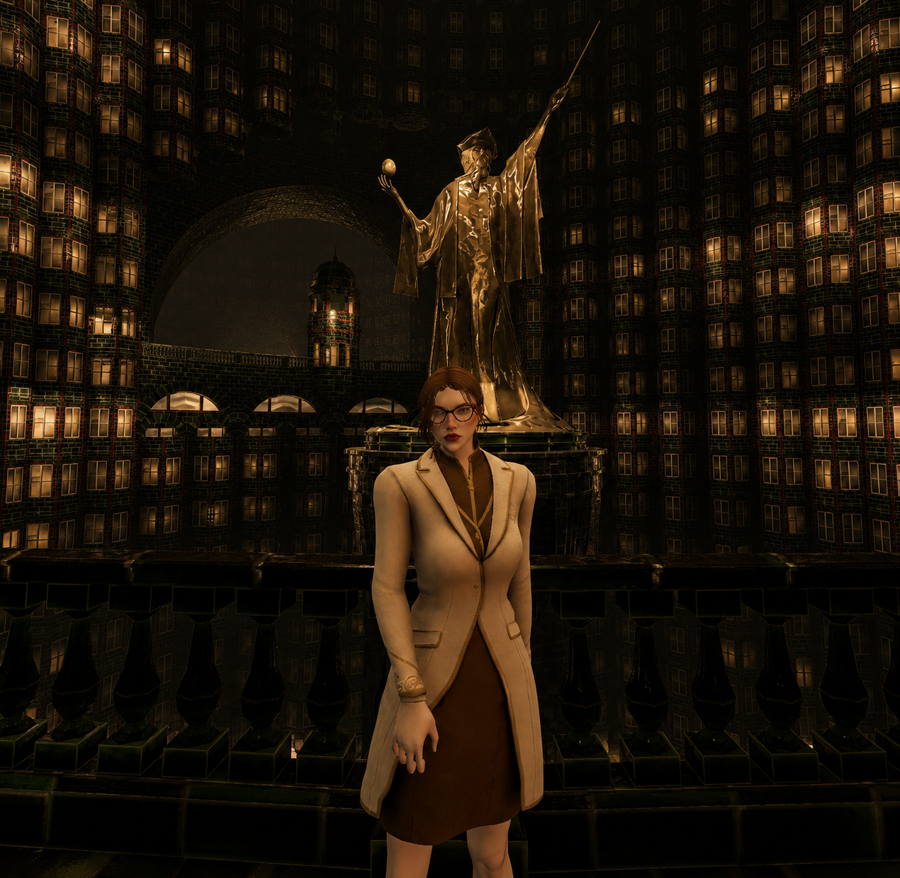
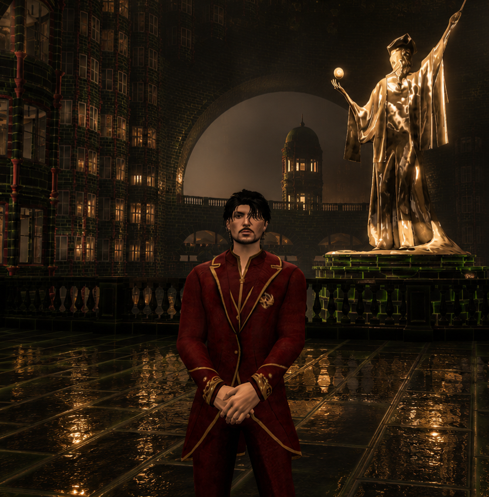
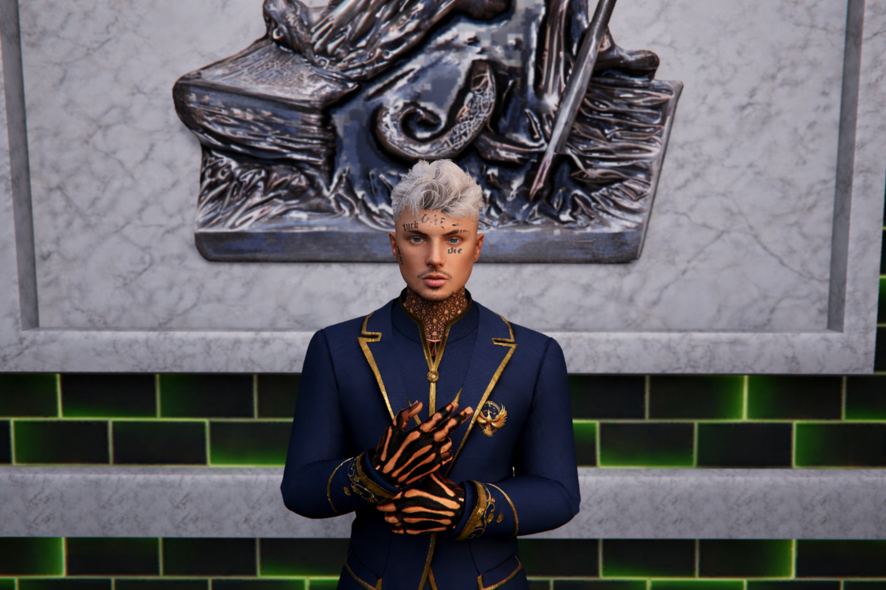

O Ministério da Magia
Instituição responsável pela administração do mundo bruxo, preservação do Véu Arcano e aplicação das normas mágicas da Cidade de Lumos.
Autoridade Máxima do Mundo Bruxo
O Ministério da Magia representa a principal estrutura governamental da comunidade mágica, responsável pela manutenção da ordem, segurança institucional e preservação da realidade arcana.
Sua atuação envolve investigações, julgamentos, regulamentação da magia, controle de artefatos, proteção do Véu e administração dos departamentos mágicos.

Estrutura do Ministério
Nikolas Warren
Responsável máximo pela administração do Ministério da Magia, decisões executivas, preservação da ordem arcana e aplicação das normas institucionais.
Subsecretários

Carmén Heart
Subsecretária Ministerial
Thalion Arcavius
Subsecretário Ministerial
Chefes de Departamento

Departamento de Execução das Leis Mágicas
Zarop Volkov Vermilion

Departamento de Investigação
Octavius Uryu Heart Salvatore
Departamento de Controle das Criaturas Mágicas
-
Departamento de Mistérios
Thalion Arcavius
Departamento de Campo
Octavius Uryu Heart Salvatore
Departamento de Campo
Alaric Lestrange
Equipes do Ministério
Aurores
- Nome do Auror
- Nome do Auror
- Nome do Auror
- Nome do Auror
Jovens Aprendizes
- Nome do Jovem Aprendiz
- Nome do Jovem Aprendiz
- Nome do Jovem Aprendiz
Estagiários
- Nome do Estagiário
- Nome do Estagiário
- Nome do Estagiário
Proteção do Mundo Mágico
O Ministério da Magia possui como dever fundamental impedir ameaças ao Véu Arcano, preservar a estabilidade da realidade mágica e proteger a comunidade bruxa.